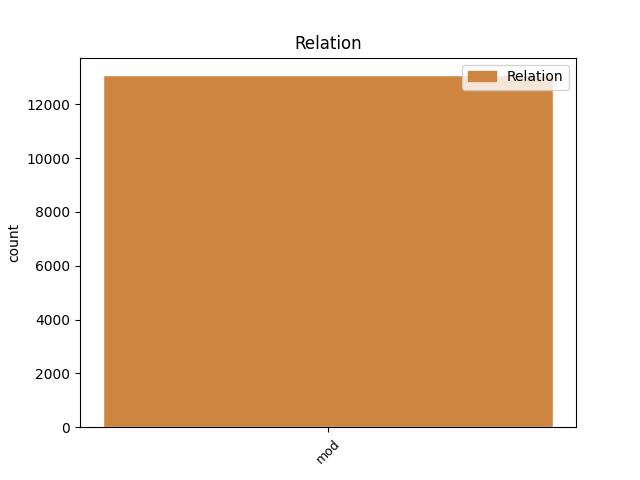
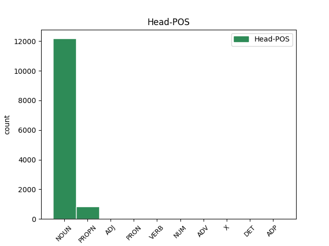
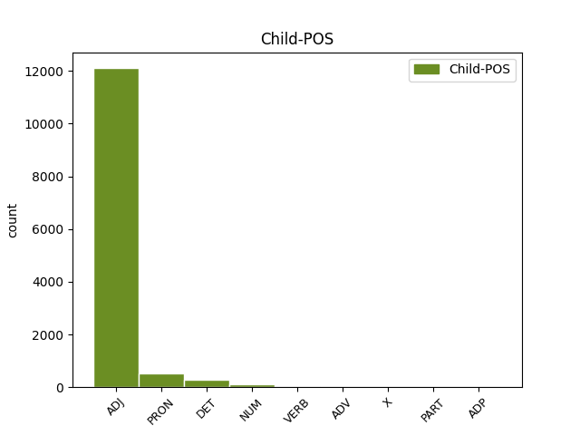

Distribution of features within this leaf



Agreement Rules sorted by frequency.
- When the dependent token is the modifer(mod) of the head token, and the dependent token is ADJ.
1 1702 _ _ _ _ 0 _ _ _
2 befanden _ _ _ _ 0 _ _ _
3 sich _ _ _ _ 0 _ _ _
4 dort _ _ _ _ 0 _ _ _
5 neben _ _ _ _ 0 _ _ _
6 der _ _ _ _ 0 _ _ _
7 Altstädter _ _ _ _ 0 _ _ _
8 Schule _ _ _ _ 0 _ _ _
9 elf _ _ _ _ 0 _ _ _
10 kleine klein ADJ ADJA Case=Nom|Gender=Neut|Number=Plur 11 mod _ _
11 Häuser Haus NOUN NN Case=Nom|Gender=Neut|Number=Plur 0 _ _ _
12 . _ _ _ _ 0 _ _ _
1 Schon _ _ _ _ 0 _ _ _
2 zu _ _ _ _ 0 _ _ _
3 Lebzeiten _ _ _ _ 0 _ _ _
4 veröffentlichte _ _ _ _ 0 _ _ _
5 Paul _ _ _ _ 0 _ _ _
6 Dahlke _ _ _ _ 0 _ _ _
7 neben _ _ _ _ 0 _ _ _
8 22 _ _ _ _ 0 _ _ _
9 selbständigen _ _ _ _ 0 _ _ _
10 Publikationen _ _ _ _ 0 _ _ _
11 auch _ _ _ _ 0 _ _ _
12 über _ _ _ _ 0 _ _ _
13 150 _ _ _ _ 0 _ _ _
14 Aufsätze _ _ _ _ 0 _ _ _
15 und _ _ _ _ 0 _ _ _
16 mehr _ _ _ _ 0 _ _ _
17 als _ _ _ _ 0 _ _ _
18 100 _ _ _ _ 0 _ _ _
19 Rezensionen _ _ _ _ 0 _ _ _
20 , _ _ _ _ 0 _ _ _
21 die _ _ _ _ 0 _ _ _
22 meisten _ _ _ _ 0 _ _ _
23 davon _ _ _ _ 0 _ _ _
24 in _ _ _ _ 0 _ _ _
25 seinen _ _ _ _ 0 _ _ _
26 beiden beide PRON PIAT Case=Dat|Definite=Ind|Gender=Fem|Number=Plur|PronType=Ind 27 mod _ _
27 Zeitschriften Zeitschrift NOUN NN Case=Dat|Gender=Fem|Number=Plur 0 _ _ _
28 , _ _ _ _ 0 _ _ _
29 der _ _ _ _ 0 _ _ _
30 " _ _ _ _ 0 _ _ _
31 Neubuddhistischen _ _ _ _ 0 _ _ _
32 Zeitschrift _ _ _ _ 0 _ _ _
33 " _ _ _ _ 0 _ _ _
34 und _ _ _ _ 0 _ _ _
35 der _ _ _ _ 0 _ _ _
36 " _ _ _ _ 0 _ _ _
37 Brockensammlung _ _ _ _ 0 _ _ _
38 " _ _ _ _ 0 _ _ _
39 . _ _ _ _ 0 _ _ _
1 Andere _ _ _ _ 0 _ _ _
2 Versionen _ _ _ _ 0 _ _ _
3 wurden _ _ _ _ 0 _ _ _
4 aus _ _ _ _ 0 _ _ _
5 Metall _ _ _ _ 0 _ _ _
6 , _ _ _ _ 0 _ _ _
7 Knochen _ _ _ _ 0 _ _ _
8 , _ _ _ _ 0 _ _ _
9 Holz _ _ _ _ 0 _ _ _
10 ( _ _ _ _ 0 _ _ _
11 siehe _ _ _ _ 0 _ _ _
12 Burmesischer _ _ _ _ 0 _ _ _
13 Armschutz _ _ _ _ 0 _ _ _
14 ) _ _ _ _ 0 _ _ _
15 , _ _ _ _ 0 _ _ _
16 Elfenbein _ _ _ _ 0 _ _ _
17 , _ _ _ _ 0 _ _ _
18 Silber _ _ _ _ 0 _ _ _
19 oder _ _ _ _ 0 _ _ _
20 auch _ _ _ _ 0 _ _ _
21 vielen viel DET PIAT Case=Dat|Definite=Ind|Gender=Masc|Number=Plur|PronType=Ind 23 mod _ _
22 anderen _ _ _ _ 0 _ _ _
23 Materialien Material NOUN NN Case=Dat|Gender=Neut|Number=Plur 0 _ _ _
24 gefertigt _ _ _ _ 0 _ _ _
25 . _ _ _ _ 0 _ _ _
1 Er _ _ _ _ 0 _ _ _
2 machte _ _ _ _ 0 _ _ _
3 aus _ _ _ _ 0 _ _ _
4 der _ _ _ _ 0 _ _ _
5 Abtei _ _ _ _ 0 _ _ _
6 einen _ _ _ _ 0 _ _ _
7 echten _ _ _ _ 0 _ _ _
8 Bischofssitz _ _ _ _ 0 _ _ _
9 , _ _ _ _ 0 _ _ _
10 stockte _ _ _ _ 0 _ _ _
11 das _ _ _ _ 0 _ _ _
12 ganze _ _ _ _ 0 _ _ _
13 Konventsgebäude _ _ _ _ 0 _ _ _
14 mit _ _ _ _ 0 _ _ _
15 Kreuzgang _ _ _ _ 0 _ _ _
16 um _ _ _ _ 0 _ _ _
17 eine ein NUM ART Case=Acc|Gender=Fem|Number=Sing|NumType=Card 18 mod _ _
18 Etage Etage NOUN NN Case=Acc|Gender=Fem|Number=Sing 0 _ _ _
19 auf _ _ _ _ 0 _ _ _
20 und _ _ _ _ 0 _ _ _
21 baute _ _ _ _ 0 _ _ _
22 das _ _ _ _ 0 _ _ _
23 Dormitorium _ _ _ _ 0 _ _ _
24 in _ _ _ _ 0 _ _ _
25 dem _ _ _ _ 0 _ _ _
26 ersten _ _ _ _ 0 _ _ _
27 Stockwerk _ _ _ _ 0 _ _ _
28 des _ _ _ _ 0 _ _ _
29 Ostflügels _ _ _ _ 0 _ _ _
30 in _ _ _ _ 0 _ _ _
31 einen _ _ _ _ 0 _ _ _
32 großzügigen _ _ _ _ 0 _ _ _
33 Korridor _ _ _ _ 0 _ _ _
34 um _ _ _ _ 0 _ _ _
35 , _ _ _ _ 0 _ _ _
36 von _ _ _ _ 0 _ _ _
37 dem _ _ _ _ 0 _ _ _
38 die _ _ _ _ 0 _ _ _
39 Zimmer _ _ _ _ 0 _ _ _
40 mit _ _ _ _ 0 _ _ _
41 Alkoven _ _ _ _ 0 _ _ _
42 und _ _ _ _ 0 _ _ _
43 Oratorien _ _ _ _ 0 _ _ _
44 ( _ _ _ _ 0 _ _ _
45 Gebetsraum _ _ _ _ 0 _ _ _
46 ) _ _ _ _ 0 _ _ _
47 abgehen _ _ _ _ 0 _ _ _
48 , _ _ _ _ 0 _ _ _
49 deren _ _ _ _ 0 _ _ _
50 Türen _ _ _ _ 0 _ _ _
51 von _ _ _ _ 0 _ _ _
52 dekorierten _ _ _ _ 0 _ _ _
53 Trumeaus _ _ _ _ 0 _ _ _
54 getrennt _ _ _ _ 0 _ _ _
55 sind _ _ _ _ 0 _ _ _
56 . _ _ _ _ 0 _ _ _
1 Benannt benennen VERB NE Case=Nom|Gender=Masc|Number=Sing 19 mod _ _
2 1994 _ _ _ _ 0 _ _ _
3 nach _ _ _ _ 0 _ _ _
4 dem _ _ _ _ 0 _ _ _
5 vormaligen _ _ _ _ 0 _ _ _
6 DFB _ _ _ _ 0 _ _ _
7 - _ _ _ _ 0 _ _ _
8 Präsidenten _ _ _ _ 0 _ _ _
9 Hermann _ _ _ _ 0 _ _ _
10 Neuberger _ _ _ _ 0 _ _ _
11 , _ _ _ _ 0 _ _ _
12 welcher _ _ _ _ 0 _ _ _
13 in _ _ _ _ 0 _ _ _
14 Völklingen _ _ _ _ 0 _ _ _
15 geboren _ _ _ _ 0 _ _ _
16 wurde _ _ _ _ 0 _ _ _
17 , _ _ _ _ 0 _ _ _
18 ist _ _ _ _ 0 _ _ _
19 es es PRON PPER Case=Nom|Gender=Neut|Number=Sing|Person=3|PronType=Prs 0 _ _ _
20 das _ _ _ _ 0 _ _ _
21 viertgrößte _ _ _ _ 0 _ _ _
22 Stadion _ _ _ _ 0 _ _ _
23 des _ _ _ _ 0 _ _ _
24 Bundeslandes _ _ _ _ 0 _ _ _
25 . _ _ _ _ 0 _ _ _
1 An _ _ _ _ 0 _ _ _
2 dem _ _ _ _ 0 _ _ _
3 Ende _ _ _ _ 0 _ _ _
4 des _ _ _ _ 0 _ _ _
5 Mittelalters _ _ _ _ 0 _ _ _
6 gab _ _ _ _ 0 _ _ _
7 es _ _ _ _ 0 _ _ _
8 nur _ _ _ _ 0 _ _ _
9 noch _ _ _ _ 0 _ _ _
10 leibeigene leibeigen ADV ADJA Case=Acc|Gender=Masc|Number=Plur 12 mod _ _
11 Humfelder _ _ _ _ 0 _ _ _
12 Bauern Bauer NOUN NN Case=Acc|Gender=Masc|Number=Plur 0 _ _ _
13 . _ _ _ _ 0 _ _ _
1 Clark _ _ _ _ 0 _ _ _
2 ist _ _ _ _ 0 _ _ _
3 damit _ _ _ _ 0 _ _ _
4 der _ _ _ _ 0 _ _ _
5 erste _ _ _ _ 0 _ _ _
6 Preisträger _ _ _ _ 0 _ _ _
7 aus _ _ _ _ 0 _ _ _
8 dem _ _ _ _ 0 _ _ _
9 nicht nicht PART ADJA Case=Dat|Gender=Neut|Number=Sing|Polarity=Neg 11 mod _ _
10 - _ _ _ _ 0 _ _ _
11 deutschsprachigen deutschsprachig ADJ ADJA Case=Dat|Gender=Neut|Number=Sing 0 _ _ _
12 Ausland _ _ _ _ 0 _ _ _
13 . _ _ _ _ 0 _ _ _
1 Zu _ _ _ _ 0 _ _ _
2 der _ _ _ _ 0 _ _ _
3 Herstellung _ _ _ _ 0 _ _ _
4 werden _ _ _ _ 0 _ _ _
5 Chromstähle _ _ _ _ 0 _ _ _
6 ( _ _ _ _ 0 _ _ _
7 2-3 _ _ _ _ 0 _ _ _
8 % % X NN Case=Nom|Gender=Neut|Number=Plur 10 mod _ _
9 - _ _ _ _ 0 _ _ _
10 Chrom Chrom NOUN NN Case=Nom|Gender=Masc|Number=Sing 0 _ _ _
11 bis _ _ _ _ 0 _ _ _
12 7-12 _ _ _ _ 0 _ _ _
13 % _ _ _ _ 0 _ _ _
14 - _ _ _ _ 0 _ _ _
15 Chrom _ _ _ _ 0 _ _ _
16 ) _ _ _ _ 0 _ _ _
17 verwendet _ _ _ _ 0 _ _ _
18 , _ _ _ _ 0 _ _ _
19 die _ _ _ _ 0 _ _ _
20 bestimmte _ _ _ _ 0 _ _ _
21 schmelzmetallurgische _ _ _ _ 0 _ _ _
22 Prozesse _ _ _ _ 0 _ _ _
23 wie _ _ _ _ 0 _ _ _
24 das _ _ _ _ 0 _ _ _
25 Elektroschlacke _ _ _ _ 0 _ _ _
26 - _ _ _ _ 0 _ _ _
27 Umschmelzverfahren _ _ _ _ 0 _ _ _
28 ( _ _ _ _ 0 _ _ _
29 ESU _ _ _ _ 0 _ _ _
30 ) _ _ _ _ 0 _ _ _
31 oder _ _ _ _ 0 _ _ _
32 das _ _ _ _ 0 _ _ _
33 Lichtbogen _ _ _ _ 0 _ _ _
34 - _ _ _ _ 0 _ _ _
35 Vakuum _ _ _ _ 0 _ _ _
36 - _ _ _ _ 0 _ _ _
37 Umschmelzen _ _ _ _ 0 _ _ _
38 ( _ _ _ _ 0 _ _ _
39 LBV _ _ _ _ 0 _ _ _
40 ) _ _ _ _ 0 _ _ _
41 durchlaufen _ _ _ _ 0 _ _ _
42 . _ _ _ _ 0 _ _ _
1 Andere _ _ _ _ 0 _ _ _
2 Anbieter _ _ _ _ 0 _ _ _
3 dieses _ _ _ _ 0 _ _ _
4 von _ _ _ _ 0 _ _ _
5 Hotmail _ _ _ _ 0 _ _ _
6 , _ _ _ _ 0 _ _ _
7 Yahoo! _ _ _ _ 0 _ _ _
8 und _ _ _ _ 0 _ _ _
9 in _ _ _ _ 0 _ _ _
10 Deutschland _ _ _ _ 0 _ _ _
11 auch _ _ _ _ 0 _ _ _
12 von _ _ _ _ 0 _ _ _
13 GMX _ _ _ _ 0 _ _ _
14 und _ _ _ _ 0 _ _ _
15 Web.de _ _ _ _ 0 _ _ _
16 dominierten dominiert ADP ADJA Case=Gen|Gender=Masc|Number=Sing 17 mod _ _
17 Marktes Markt NOUN NN Case=Gen|Gender=Masc|Number=Sing 0 _ _ _
18 hatten _ _ _ _ 0 _ _ _
19 ihren _ _ _ _ 0 _ _ _
20 Nutzern _ _ _ _ 0 _ _ _
21 in _ _ _ _ 0 _ _ _
22 dem _ _ _ _ 0 _ _ _
23 Vergleich _ _ _ _ 0 _ _ _
24 dazu _ _ _ _ 0 _ _ _
25 nur _ _ _ _ 0 _ _ _
26 zwischen _ _ _ _ 0 _ _ _
27 2 _ _ _ _ 0 _ _ _
28 und _ _ _ _ 0 _ _ _
29 20 _ _ _ _ 0 _ _ _
30 Megabyte _ _ _ _ 0 _ _ _
31 gewährt _ _ _ _ 0 _ _ _
32 . _ _ _ _ 0 _ _ _
Disagree Examples:
1 Bei _ _ _ _ 0 _ _ _
2 der _ _ _ _ 0 _ _ _
3 Abreise _ _ _ _ 0 _ _ _
4 kam _ _ _ _ 0 _ _ _
5 dann _ _ _ _ 0 _ _ _
6 noch _ _ _ _ 0 _ _ _
7 die _ _ _ _ 0 _ _ _
8 böse böse ADJ ADJA Case=Acc|Gender=Fem|Number=Sing 9 mod _ _
9 Überraschung Überraschung NOUN NN Case=Nom|Gender=Fem|Number=Sing 0 _ _ _
10 in _ _ _ _ 0 _ _ _
11 Form _ _ _ _ 0 _ _ _
12 von _ _ _ _ 0 _ _ _
13 extrem _ _ _ _ 0 _ _ _
14 überhöhten _ _ _ _ 0 _ _ _
15 Übernachtungspreisen _ _ _ _ 0 _ _ _
16 . _ _ _ _ 0 _ _ _
1 Vielen viel DET PIAT Case=Dat|Definite=Ind|Number=Plur|PronType=Ind 3 mod _ _
2 Vielen _ _ _ _ 0 _ _ _
3 Dank dank NOUN NN Case=Acc|Gender=Masc|Number=Sing 0 _ _ _
4 für _ _ _ _ 0 _ _ _
5 die _ _ _ _ 0 _ _ _
6 super _ _ _ _ 0 _ _ _
7 professionelle _ _ _ _ 0 _ _ _
8 Arbeit _ _ _ _ 0 _ _ _
9 . _ _ _ _ 0 _ _ _
1 Eine _ _ _ _ 0 _ _ _
2 super _ _ _ _ 0 _ _ _
3 professionelle _ _ _ _ 0 _ _ _
4 Beratung _ _ _ _ 0 _ _ _
5 und _ _ _ _ 0 _ _ _
6 Risikoaufklärung _ _ _ _ 0 _ _ _
7 , _ _ _ _ 0 _ _ _
8 die _ _ _ _ 0 _ _ _
9 nicht _ _ _ _ 0 _ _ _
10 darauf _ _ _ _ 0 _ _ _
11 abzielt _ _ _ _ 0 _ _ _
12 das _ _ _ _ 0 _ _ _
13 meiste meist DET PIAT Case=Nom|Definite=Ind|Gender=Neut|Number=Sing|PronType=Ind 14 mod _ _
14 Geld Geld NOUN NN Case=Acc|Gender=Neut|Number=Sing 0 _ _ _
15 zu _ _ _ _ 0 _ _ _
16 machen _ _ _ _ 0 _ _ _
17 , _ _ _ _ 0 _ _ _
18 sondern _ _ _ _ 0 _ _ _
19 effektiv _ _ _ _ 0 _ _ _
20 zu _ _ _ _ 0 _ _ _
21 arbeiten _ _ _ _ 0 _ _ _
22 . _ _ _ _ 0 _ _ _
1 Wünscht _ _ _ _ 0 _ _ _
2 Untersuchung _ _ _ _ 0 _ _ _
3 auf _ _ _ _ 0 _ _ _
4 evtl evtl ADJ NN Case=Dat|Gender=Neut|Number=Sing 8 mod _ SpaceAfter=No
5 . _ _ _ _ 0 _ _ _
6 bereits _ _ _ _ 0 _ _ _
7 aufgetretene _ _ _ _ 0 _ _ _
8 Schädigung Schädigung NOUN NN Case=Acc|Gender=Fem|Number=Sing 0 _ _ _
9 des _ _ _ _ 0 _ _ _
10 Auges _ _ _ _ 0 _ _ _
11 . _ _ _ _ 0 _ _ _
1 Nun _ _ _ _ 0 _ _ _
2 kam _ _ _ _ 0 _ _ _
3 der _ _ _ _ 0 _ _ _
4 Hammer _ _ _ _ 0 _ _ _
5 : _ _ _ _ 0 _ _ _
6 Nachdem _ _ _ _ 0 _ _ _
7 ich _ _ _ _ 0 _ _ _
8 das _ _ _ _ 0 _ _ _
9 Wort _ _ _ _ 0 _ _ _
10 Kontaktlinsen _ _ _ _ 0 _ _ _
11 erwähnt _ _ _ _ 0 _ _ _
12 hatte _ _ _ _ 0 _ _ _
13 , _ _ _ _ 0 _ _ _
14 fiel _ _ _ _ 0 _ _ _
15 bei _ _ _ _ 0 _ _ _
16 Frau _ _ _ _ 0 _ _ _
17 Dr. _ _ _ _ 0 _ _ _
18 eine _ _ _ _ 0 _ _ _
19 Klappe _ _ _ _ 0 _ _ _
20 und _ _ _ _ 0 _ _ _
21 sie _ _ _ _ 0 _ _ _
22 ließ _ _ _ _ 0 _ _ _
23 mich _ _ _ _ 0 _ _ _
24 bis _ _ _ _ 0 _ _ _
25 zu _ _ _ _ 0 _ _ _
26 dem _ _ _ _ 0 _ _ _
27 Ende _ _ _ _ 0 _ _ _
28 unseres _ _ _ _ 0 _ _ _
29 Termins _ _ _ _ 0 _ _ _
30 keine kein PRON PIAT Case=Nom|Definite=Ind|Gender=Masc|Number=Plur|Polarity=Neg|PronType=Neg 32 mod _ _
31 einzigen _ _ _ _ 0 _ _ _
32 Satz Satz NOUN NN Case=Dat|Gender=Masc|Number=Sing 0 _ _ _
33 mehr _ _ _ _ 0 _ _ _
34 aussprechen _ _ _ _ 0 _ _ _
35 . _ _ _ _ 0 _ _ _